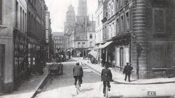
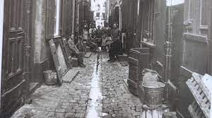

Pourquoi Assassin's Creed dans le Nord-Pas-De-Calais ?
Dans le Pas-De-Calais ayant reçu des templiers au cours de la seconde moitié du 12ème siècle, plusieurs
commanderie ont été situé dans tout le pas de Calais notamment dans la ville de calais où une
commanderie renommé "commanderie de Loison" avec coordornées 50° 26′ 20,91″ nord, 1° 55′ 34,14″ est.
L'ordre du temple
L'arrivé des templiers sur les bords de la Créquoise est certainement dû à Saint-Omer, Guillaume de Saint-Omer qui sont les parents de Godefroy qui est l'un des premiers fondateurs de l'ordre du Temple, Recueille des moines soldats dans son château de Beaurain ( Beaurainville aujourd'hui). Ceci est une des gloires de la famille Ridefort.
Commandant des Templiers :
- Olivier de la roche (Période: 1225)
- Warin (Période: 1278)
- Jean de Gevisei (Période: 1300)
Avec la ville d'Arras

Cette façon d'agir des Templiers ne peut s'expliquer que par l'ardeur qu'ils
mettaient à rechercher tout ce qui pouvait accroître leurs richesses et leur puissance. Beaucoup de
leurs actes, même ceux qui s'inspiraient de la charité, n'étaient pas toujours exempts d'un certain
esprit de calcul, et cachaient parfois un but intéressé. Ainsi nous voyons en 1208 le frère André de
Coulours, alors grand-maître de l'Ordre du Temple, accorder à un nommé Raoul et à Mathilde, sa femme, la
jouissance viagère de dix-huit mencaudées de terre à Isles, à la condition qu'à leur mort, ces terres
feraient retour aux Templiers avec deux mencaudées ou bien quatre livres parisis que les époux Raoul y
ajouteraient de leur propre héritage.
Une convention du même genre eut encore lieu en 1225, entre Eudes Royer, commandeur des maisons du
Temple en France, et Anselme, frère du mayeur d'Arras, lequel reçut des terres du Commandeur, à la
charge d'en augmenter le nombre lorsqu'elles reviendraient après son décès en la possession du Temple.
Les Templiers n'exerçaient pas l'hospitalité gratuitement, comme le faisaient les chevaliers de
l'Hôpital Saint-Jean-de-Jérusalem. Cependant ils pratiquaient parfois cette vertu, lorsqu'il y avait
quelque profit à en retirer; c'est ainsi qu'ils recevaient, en 1180, dans leur maison d'Arras, Hunez de
Beaumont et Emmeline, sa femme, pour y être nourris et entretenus durant leur vie; mais ceux-ci leur
avaient donné pour cela quatre mencaudées de terre, leur manoir et maison dont ils se réservaient
l'usufruit jusqu'au décès du survivant d'eux.
Nous trouvons encore, à la fin du XIIe siècle, diverses donations faites à l'Ordre dans la personne du
frère Renier, commandeur de la maison des Templiers d'Arras, « preceptor domus Templariorum atrebatensis
», par Amaury de Saulty en 1186, de cinquante mencaudées de terre et de tout ce que tenait de lui
Bertrand de Beaufort à Agny, près d'Arras; par Eloi « de Wendi », la même année, de douze mencaudées de
son alleu au terroir d'Yzel; par Bauduin de Wormouth, « de Voermolt », en 1188, d'une maison sous la
ville d'Arras, « subtus villam Atrebatensem »; par Louis de Blairville, chevalier, en 1193, d'une autre
maison près d'Arras, vers la cité, « juxta Atrebatum versus civitatem »
Les Templiers possédaient dans la ville d'Arras un certain nombre de maisons qu'ils donnérent ensuite à
cens pour se décharger des frais d'entretien et de réparations. Au commencement du XIVe siècle, ils en
avaient encore trois:
— l'une, appelée le Four du Temple dans la rue de Pavie, « in vico de Pavia »;
— une autre, nommée le Temple, devant la porte de Saint-Nicolas;
— et la troisième, qui portait d'abord le nom de Brasserie du Temple, puis celui du Rouge-Chevalier,
était située dans le faubourg, entre la porte de Saint-Nicolas et la Barre du Ris, « inter portam Sancti
Nicholai et barram de Risco. »
Ces deux dernières maisons furent détruites pendant les guerres du XIVe siècle; et en 1377, les
Hospitaliers en avaient concédé le terrain à la ville d'Arras qui leur payait une rente de 6 livres 15
sols par an.
La chapelle du Temple d'Arras subit le même sort que la maison. Elle fut incendiée à la fin du XVIe
siècle et ne fut point rétablie. Les terres, avec les cens et rentes foncières, furent réunies au
domaine de la commanderie.
La commanderie et ses biens sont vraiment connus à partir de 1175, année où Ségalon, seigneur d'Arras,
accorde aux Templiers de la ville le droit de percevoir la moitié de sa part des dîmes de Méricourt.
Cette donation est confirmée par l'évêque d'Arras et acceptée par Eustache Chien, maître en France et
Baudouin de Gand, précepteur de, Flandre et Renier, commandeur d'Arras.
La grande période des donations pour le Temple d'Arras allait commencer. Les bourgeois, les paysans se
donnent au Temple avec tous leurs biens. En 1180 c'est Amans Nunez de, Beaumont et Emmeline sa femme qui
se donnent à l'Ordre pour y être entretenus et nourris leur vie durant. En échange ils donnent quatre
mancaudées de terre, leur manoir et leur maison dont ils conservaient l'usufruit au dernier vivant.
Le frère Renier, commandeur d'Arras eut un long préceptorat. En 1186, il reçoit la donation pour la
maison d'Arras et au nom de ses frères du Temple cinquante mancaudées de terre d'Amaury de Saulty ainsi
que tout ce que tenait de lui Bertrand de Beaufort. L'ensemble de ces donations était situé à Agiles.
Le commandeur reçoit aussi cette même année les biens d'Eloi de Wendi qui comprenaient douze mancaudées
sur un alleu qu'il avait sur le territoire d'Yzel ?, aujourd'hui Les Hameau, lieu-dit de Liévin. A la
même
époque c'est Baudouin de Wermouth qui donne une maison à Arras.
Le domaine des Templiers d'Arras poussa son extension jusque dans le diocèse d'Amiens lorsque Pierre
d'Arras confirma en 1189 un accord entre les Templiers et Beaudouin de Beaufort, chevalier au sujet
d'une dîme sise à Bavelencourt.
Arras fut une commanderie importante, il est vrai, mais c'est bien la seule commanderie où nous trouvons
le même commandeur durant plus de 25 années consécutives surtout en cette dernière partie du XIIe
siècle. Rainier, commandeur d'Arras en 1171 se trouve encore à la tête de la communauté en 1193 lorsque
Louis de
Blanville notifie avoir donné aux frères du Temple d'Arras une maison située dans la ville vers la cité.
Il n'est pas rare que des croisés fassent des donations alors qu'ils sont sur les champs belligérants.
On retrouve quelques unes de ces donations pour les commanderies qui nous intéressent dans ce volume. Au
mois de février 1203, alors qu'il était à la croisade, Waast, chevalier d'Arras, se rendit au Palais
épiscopal d'Acre au moment de mourir. Il réunit tous ses compagnons d'armes et donna aux frères de la
milice du Temple tous ses biens, rentes et Héritages. Il y avait Baudouin de Salle, Verne de Hamblain,
Jacques Durant et Baudouin son cousin, Simon de Pasquindale ami du comte de Flandre, Guillaume châtelain
d'Arras, Barthélemy et Morezin, bourgeois d'Acre et Regnault de Melun chapelain.
Le premier quart du XIIIe siècle va être aussi fécond en fondations que l'a été la fin du XIIe siècle.
Nous participons à la deuxième grande période de donations, celle qui fit suite à la deuxième prise de
Jérusalem et à l'essai de reconquête. Toutefois il faut reconnaître qu'après 1203 l'Ordre du Temple,
ayant obtenu du pape Innocent III la confirmation, par bulle solennelle, de l'exemption, les privilèges
spirituels de l'Ordre du Temple allaient de pair avec les privilèges temporels et égalaient ceux des
grands monastères et des chefs d'Ordre comme Cluny, Prémontré, Cîteaux etc.
En 1208, André de Coulours, maître de l'Ordre en France accordait à Raoul et Mathilde son épouse la
jouissance viagère de 18 mancaudées de terre situées à Irles à la seule condition qu'à leur mort les
terres redeviennent propriétés du Temple. Faisant suite à cette clause il fuit spécifié que les preneurs
devraient rendre la propriété en y ayant ajouté deux mancaudées supplémentaires Ou 4 livres parisis
qu'ils auraient ajouté à leur héritages leur vie durant. Comme on peut le constater, la commanderie
d'Arras possédait plusieurs biens éloignés du siège
titulaire.
Les temples de Blairville
Le Fief du Temple de Blairville était, comme celui d'Agnez, une succursale du Temple d'Arras; il était
située dans la rue d'Aubigny. Cette maison est mentionnée pour la première fois dans des lettres de R.,
évêque d'Arras, de l'année 1218, portant donation à titre d'aumône par Bauduin de Bretencourt à
Gauthier, commandeur du Temple d'Arras, d'une rente d'un demi-mencaud d'avoine qu'il avait sur trois
mencaudées de terre derrière la maison du Temple à Blairville, « rétro mansum Templi apud Blarevile. »
Le domaine de Blairville était assez considérable; ses terres s'étendaient sur Ficheux, village voisin,
où la commanderie possédait des terrages.
Une charte de Guy, seigneur d'Habarcq, « de Habara » du 19 mars 1227, approuve et ratifie, comme
seigneur dominant, les ventes faites aux frères de la chevalerie du Temple par Louis d'Adinfer, «
d'Andifer », chevalier, Gotrand et Martin d'Hendecourt, de tous les terrages qu'ils possédaient au
terroir de Ficheux, « in territorio de Fisseux », en divers lieux, aux Kaisnois, à Brokonsart, etc. Le
seigneur d'Habarcq confirmait ces ventes qu'il amortissait, à la charge d'une rente d'un ou de deux
deniers sterlings que les Templiers devaient lui payer chaque année, et sous la réserve à lui faite de
la haute justice sur les terrages cédés.
Le Livre-Vert nous donne ainsi l'état des revenus de la maison de Blairville en 1373: « à Blaieville,
une maison de XIIIxx mencaudées et une boisselée de terres arables, dont les anciennes doivent dismes et
terrages, et XXVII solz IX deniers de rente au seigneur du lieu, et à Madame d'Artois, V mencaus de blé,
au curé du lieu, II boisselées, et à Jehan de Hendecourt, II eslellins d'argent. Sy valent toutes ces
choses les charges payées IIIIxx frans par an, et couste ladite maison à retenir bien X frans par an.
Ainsi reste LXX frans. »
Le Commandeur avait dans son fief de Blairville toute justice haute, moyenne et basse, qu'avait voulu
lui contester en 1402 le seigneur de Nédonchel; mais des lettres royales, obtenues en chancellerie cette
année-là, confirmèrent à la commanderie tous ses droits, et imposèrent une amende à l'opposant dont les
baillis et sergents avaient jeté le trouble dans le domaine de Blairville.
Les guerres du XVIe siècle causèrent de graves dommages à la maison de Blairville. Elle était devenue
inhabitable, et il fallait la rebâtir. Pour éviter cette dépense, le commandeur Hospitaliers de
Hautavesnes fut autorisé en 1584 à affermer les terres du domaine, qui étaient alors de 260 mencaudées,
à un nommé Simon Leroux pour 27 ans, à la charge de payer chaque année la responsion, et d'emmener à
Arras, au Commandeur, cent mencauds de blé avec 50 florins carolus de 20 patards chacun; et en outre
sous la condition expresse que le preneur réédifierait à ses frais la maison ainsi que la grange et les
étables.